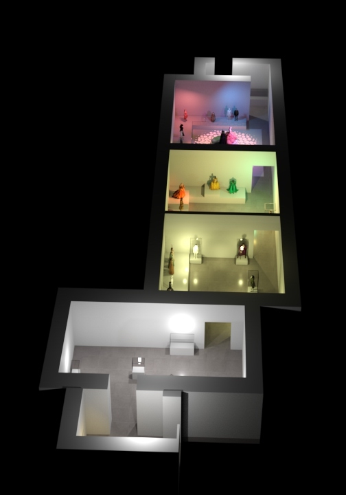
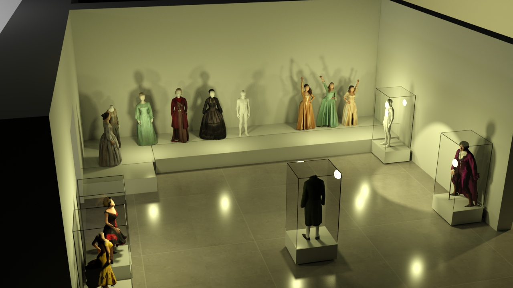
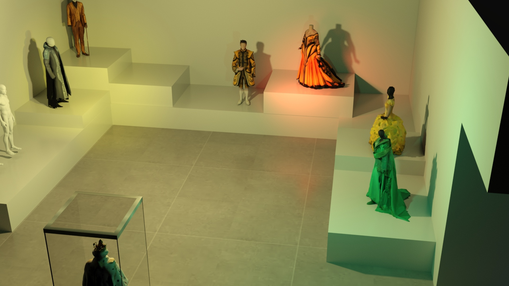
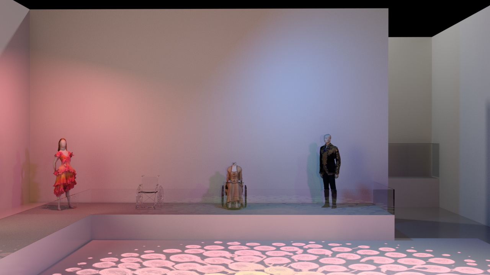
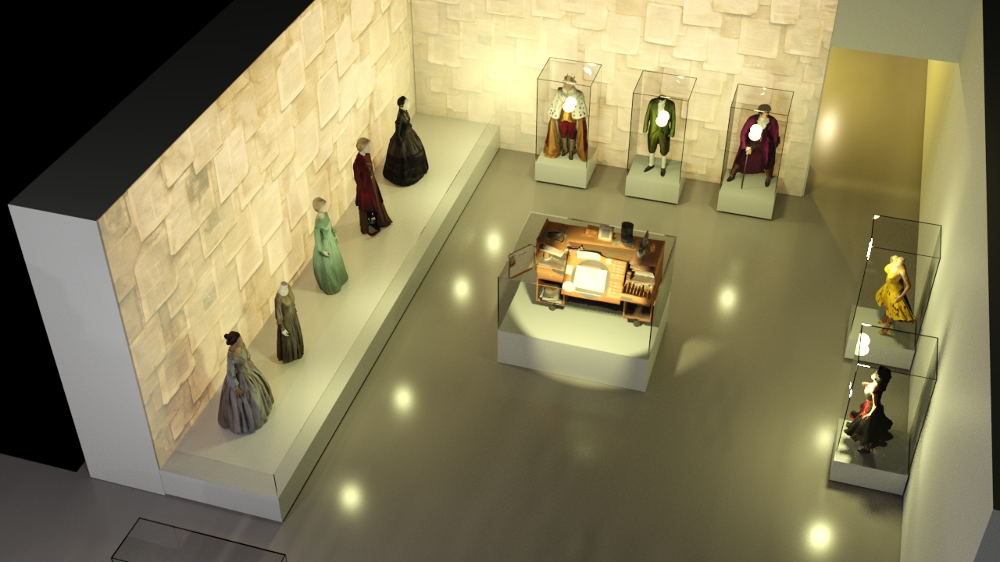
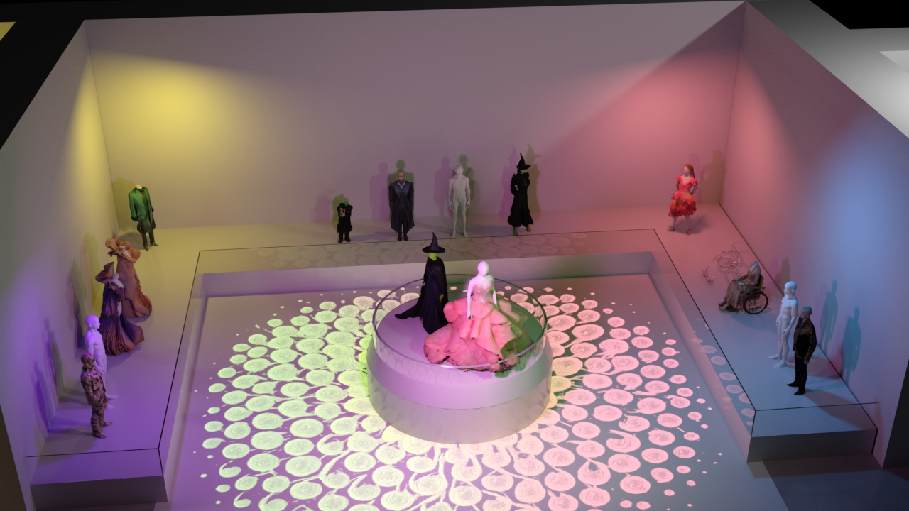

The Griffin MSI

I worked at the Kenneth C. Griffin Museum of Science and Industry as a Design Intern. I developed 3D environment models and produced weekly renderings for The Paul Tazewell Exhibit, which opened on January 19th, 2026.
These renders guided discussions on spatial layout, lighting, and artifact protection during leadership reviews.

I joined the design team midway through the exhibit’s conceptual development phase. My responsibilities focused on translating physical measurements into digital models, creating iterative renders, and refining lighting schemes that matched the curatorial narrative. I participated in cross-department meetings where creative direction, accessibility, and artifact presentation strategies were discussed.


These renderings were eventually shown to Paul, and I had the honor of joining meetings with him in person. The process made me think about the importance of visualization in concept development. It showed me how quickly ideas can shift, and how much a rendering can shape the way a concept is understood and discussed.


